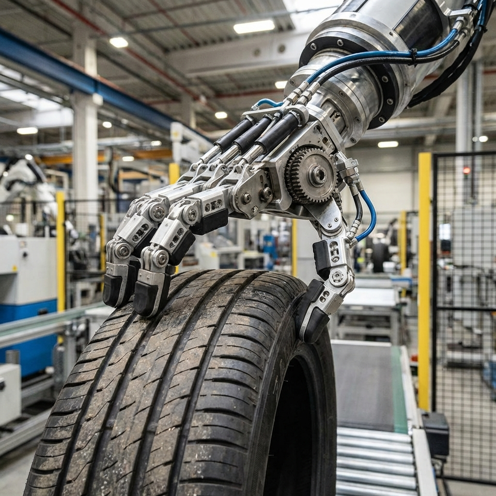

March 2026 will be remembered as the month humanoid robots stopped being demos and started being workers. This isn't hyperbole—it's the consensus emerging from GTC 2026, boardrooms across Europe, and factory floors where machines that look like us are finally doing work like us.
The evidence is everywhere. NVIDIA unveiled its Open Physical AI Data Factory Blueprint—a comprehensive framework for training robots in simulated environments before deploying them to real factories. Renault announced plans to deploy 350 "Calvin" humanoid robots across its manufacturing facilities within 18 months. Universal Robots introduced the UR AI Trainer, enabling robots to learn directly from human demonstrations. And the International Federation of Robotics released its 2026 trends report, showing humanoid robotics expanding faster than any category in the history of industrial automation.
NVIDIA's Blueprint for Physical AI
Jensen Huang's GTC keynote this year wasn't about GPUs—it was about robots. Specifically, the Open Physical AI Data Factory Blueprint, a complete stack for training, simulating, and deploying humanoid robots at industrial scale.
The concept is elegant: instead of training robots in the real world, where mistakes are expensive and dangerous, NVIDIA's system creates high-fidelity simulated environments where thousands of robot instances can learn simultaneously. The simulations include physics accurate enough that skills transfer directly to physical machines. A robot that learns to handle tires in simulation can handle tires in reality.
The technical achievement is staggering. NVIDIA claims their simulation environment can train a humanoid robot to perform complex manipulation tasks in days rather than months—and with success rates that exceed traditional programming approaches. The "Open" in the name isn't marketing: NVIDIA is releasing the entire stack, from simulation tools to deployment frameworks, under permissive licenses.
Renault's 350-Robot Bet

While NVIDIA provides the tools, Renault is providing the proof of concept. The French automaker announced the largest humanoid robot deployment in industrial history: 350 "Calvin" units across its manufacturing network within 18 months.
The "Calvin" robots—named after the Renaissance humanist, not the cartoon character—are humanoids designed specifically for automotive assembly tasks. They're starting with tire handling, a physically demanding job that combines heavy lifting with precise positioning, exactly the kind of task where humanoids offer advantages over traditional industrial arms.
What's notable is the scale and speed. Renault isn't piloting one or two units—they're deploying hundreds. The confidence suggests they've already validated the technology in extensive trials. According to Renault's announcement, early Calvin units have achieved 98% uptime in pilot programs, performing tire mounting tasks at speeds approaching human workers.
The economic calculus is compelling. At current pricing, each Calvin robot costs roughly equivalent to two years of human labor for the same role—but works three shifts, doesn't take breaks, and doesn't require benefits. The payback period is measured in months, not years.
Universal Robots' AI Trainer
Not to be outdone, Universal Robots unveiled the UR AI Trainer—a system that allows workers to teach robots through demonstration rather than programming. Show the robot what to do, and it learns. Make a correction, and it adapts.
This is significant because it democratizes robot deployment. Traditional industrial robotics required specialized programmers, lengthy integration periods, and significant downtime for reconfiguration. The AI Trainer promises to let floor workers train robots in hours, not weeks.
The system uses a combination of computer vision, force feedback, and imitation learning to understand not just what the human is doing, but why. When a worker demonstrates a assembly sequence, the AI Trainer extracts the underlying strategy—grip patterns, force thresholds, motion planning—rather than just copying the exact movements.
The IFR 2026 Report: Numbers Don't Lie
The International Federation of Robotics released its annual trends report this month, and the humanoid numbers are explosive. The organization projects 50,000 humanoid robots will be deployed in industrial settings by the end of 2026—a tenfold increase from 2025. By 2028, they estimate 500,000 units globally.
This growth rate exceeds any previous category in industrial robotics history. It took collaborative robots (cobots) a decade to reach similar deployment levels. Humanoids are projected to do it in three years.
The report identifies several factors driving this acceleration: improved hardware reliability, declining costs, better AI for task learning, and—critically—labor shortages in manufacturing sectors worldwide. Companies aren't deploying humanoids because they're futuristic; they're deploying them because they can't find humans willing to do the work.
Why Humanoids? Why Now?
The obvious question is why humanoid form factors are winning when traditional industrial robots have dominated for decades. The answer lies in flexibility. A humanoid can walk into an existing factory designed for human workers and use the same tools, navigate the same spaces, and perform the same tasks without retrofitting the entire facility.
Traditional industrial robots require specialized fixtures, fixed mounting points, and carefully controlled environments. Humanoids can adapt to existing infrastructure. For manufacturers looking to automate without massive capital investment in facility redesign, humanoids offer a compelling value proposition.
The "why now" is equally straightforward: the technology has finally matured. Better actuators, more efficient power systems, and—most importantly—dramatically improved AI for perception and control have made humanoids reliable enough for industrial deployment. The hardware existed five years ago. The intelligence to control it effectively is what's new.
The Workforce Question
We need to talk about jobs. The IFR report acknowledges what everyone in manufacturing already knows: these robots are being deployed to replace humans in roles that companies struggle to fill. Tire handling, as Renault's deployment shows, is physically demanding, repetitive, and increasingly difficult to staff.
But the report also notes something interesting: humanoid deployment is creating new categories of jobs. Robot fleet managers, AI training specialists, human-robot collaboration coordinators—these roles didn't exist three years ago and now represent one of the fastest-growing job categories in manufacturing.
The transition won't be painless. Workers displaced by automation will need support, retraining, and time. But the narrative of robots simply eliminating jobs is proving too simple. The reality is more complex: robots are eliminating some jobs, creating others, and fundamentally changing what "manufacturing work" means.
What's Next
The deployment phase is just beginning. NVIDIA's blueprint, Renault's commitment, and Universal Robots' training tools are enabling a wave of adoption that will transform manufacturing over the next five years. The robots of science fiction are becoming the coworkers of industrial reality.
For businesses, the question is no longer whether to adopt humanoid robots, but how quickly. The competitive advantages of 24/7 operation, consistent quality, and workforce flexibility are becoming impossible to ignore. The laggards won't be laggards for long—they'll be casualties.
March 2026: the month the future arrived on the factory floor. It won't be leaving.